"Transforming Restaurant Operations, One Byte at a Time."
 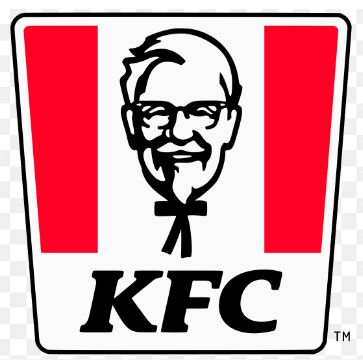
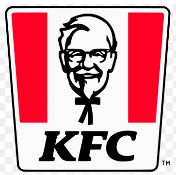

 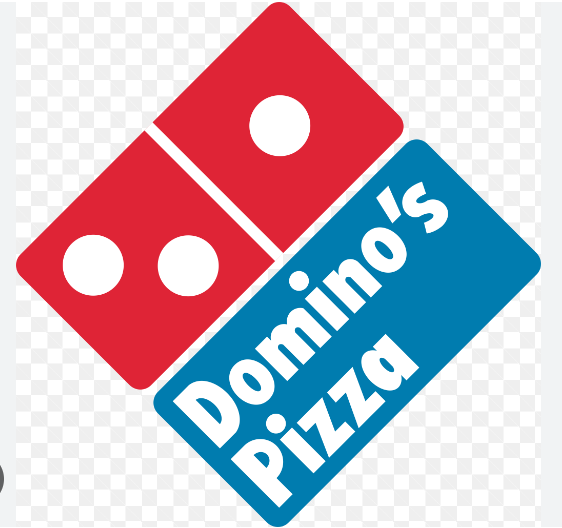
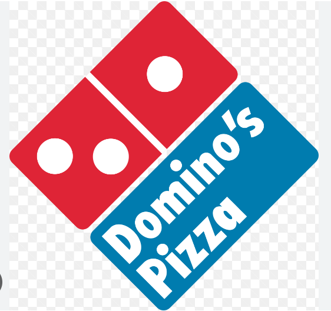
 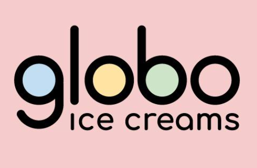
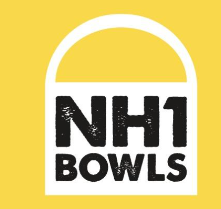
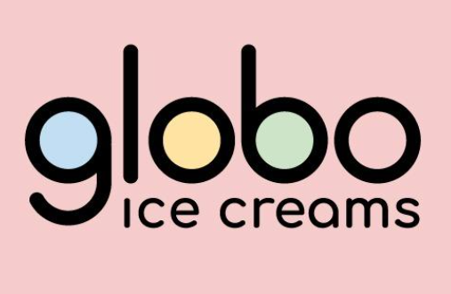
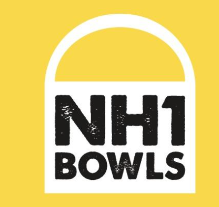
"Welcome to our innovative restaurant management solution! We've crafted a seamless dining experience with QR codes for your tables. Empower your customers to explore menus, order, and enjoy their meals effortlessly. Elevate your restaurant operations with us."
Get Started
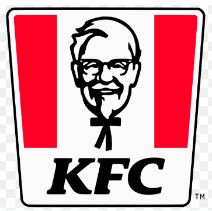
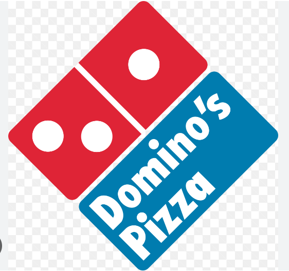
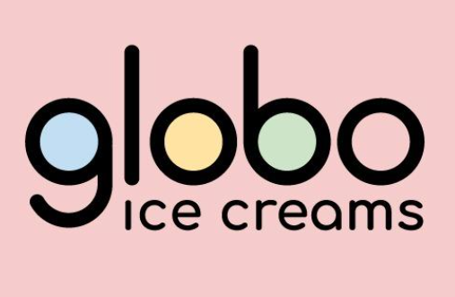
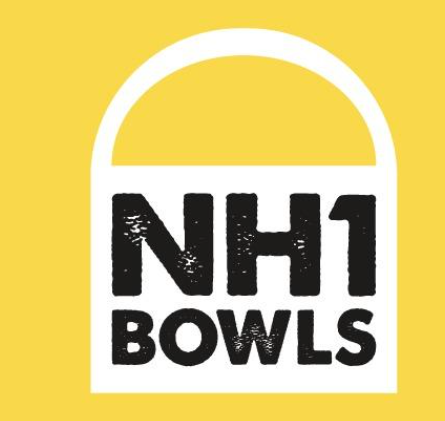
One of the standout features of our Table Management system is its ability to provide real-time table tracking and allocation. With a quick glance, your restaurant staff can see which tables are occupied, which are reserved, and which are available. This data empowers them to make quick decisions and provide excellent service.By offering real-time insights into table status, our system enables your restaurant to optimize its operations. This ensures that you can efficiently allocate resources, such as servers and kitchen staff, based on current demand. The result is improved efficiency and customer satisfaction.
Learn More
Restaurants can now easily update their menus with just a few clicks. Digital menu management systems allow for instant modifications, ensuring that outdated items can be removed, new offerings added, and seasonal specials incorporated with unparalleled ease. With digital menus, restaurants can tailor their offerings to individual customers based on preferences, dietary restrictions, or order history. This level of customization enhances the dining experience and increases customer satisfaction, leading to repeat visits.Get insights into which items are popular.
Learn More
Efficiency is the key when it comes to processing orders. Our system streamlines the order processing workflow, ensuring that the kitchen staff receives orders promptly. Each item is categorized and organized to simplify preparation, reducing waiting times and minimizing the chances of errors. .We understand that every customer is unique, and their tastes can be diverse. giving customers the flexibility to tailor their dishes to their likingCommunication is vital in any successful order management system. Our system provides real-time updates to both customers and staff.
Learn More
"Experience the future of dining with our Table QR billing system. Say goodbye to paper bills and hello to convenience and efficiency!" Our QR code-based billing makes settling the tab a breeze. No more waiting for the check - simply scan the code and pay with your smartphone.Discover the future of seamless billing and payment with our innovative Customer Insights platform. Our table QR billing system is designed to transform your payment experience, offering unmatched convenience and efficiency. Here's how we make managing bills and payments a breeze. Our platform is designed to enhance your overall dining experience. With quick and hassle-free billing and payment, you can focus on enjoying your meal and the company of your friends and family.
Learn More
Our customer insights system is designed to gather a wealth of valuable data to help us better understand our customers. By analyzing this data, we can offer a more personalized and satisfying experience its ability to track and record customer preferences, from product choices to communication channels, helping us tailor our services to individual tastes. This historical data enables us to identify trends, predict future needs, and make data-driven decisions to improve our offerings. our Customer Insights system empowers you to harness the wealth of customer data at your disposal. By understanding their preferences, order history, and feedback, you can create meaningful, personalized interactions that lead to stronger customer relationships, increased loyalty, and ultimately, greater business success.
Learn More
In today's competitive restaurant industry, gathering feedback from customers is essential. It's not just about serving delicious food; it's about understanding the preferences and expectations of your patrons. Our innovative Feedback and Review System is designed to help you elevate your dining experience and enhance customer satisfaction.We've made it incredibly easy for customers to leave reviews and ratings for your restaurant. In addition to ratings, customers can also leave detailed comments and suggestions. our Feedback and Review System empowers you to meet and exceed customer expectations. It's a win-win solution happier customers and a more successful restaurant. Join us on the journey to culinary excellence.in fostering strong customer relationships and achieving a competitive edge in the market.
Learn More